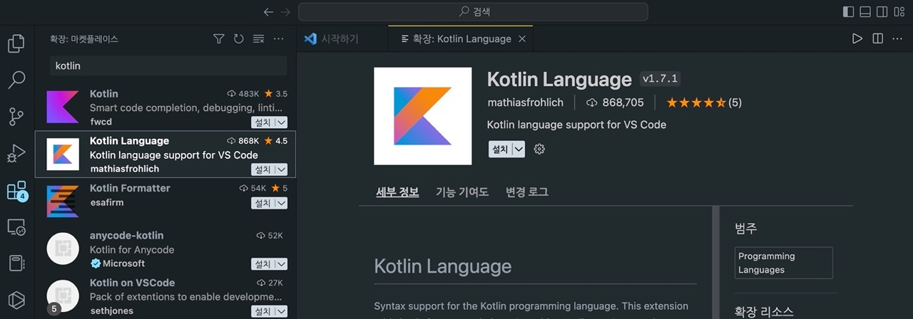
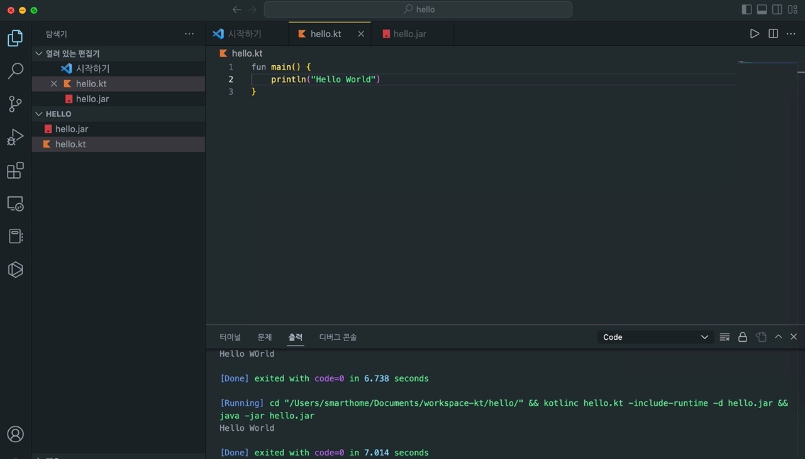

kotlin은 IntelliJ IDEA 개발사로 유명한 JetBrains에서 2011년에 공개한 오픈 소스 프로그래밍 언어이다. Java와 유사하며 Java에 비해 조금 더 간결한 문법을 사용한다는 특징이 있다. Java와 100% 상호 호환이 가능하다. Android의 공식 언어로 채택된 언어이기도 하다. 코틀린 구성에 앞서 java를 설치하도록 한다. (환경 MacOS)
brew install openjdk@17
설치가 완료되면 설치된 openjdk 경로를 bash_profile에 반영해준다.
echo 'export PATH="/usr/local/opt/openjdk@17/bin:$PATH"' >> /Users/smarthome/.bash_profile
source ~/.bash_profile
어어서 java버전을 확인한다.
$ java -version
openjdk version "17.0.5" 2022-10-18
OpenJDK Runtime Environment Homebrew (build 17.0.5+0)
OpenJDK 64-Bit Server VM Homebrew (build 17.0.5+0, mixed mode, sharing)
이어서 brew를 이용해 kotlin 설치를 진행한다.
$ brew install kotlin
Running `brew update --auto-update`...
==> Auto-updated Homebrew!
Updated 1 tap (homebrew/core).
You have 19 outdated formulae installed.
You can upgrade them with brew upgrade
or list them with brew outdated.
==> Fetching dependencies for kotlin: openjdk
...
kotline 설치가 완료되었다면 버전을 확인한다.
$ kotlinc -version
info: kotlinc-jvm 1.8.0 (JRE 19.0.1)
이어서 ide 상에 kotline 개발 환경을 구성한다. IntelliJ IDEA를 이용 할 수 있지만 이 글에서는 vscode에서 kotlin을 구성을 사용하기로 한다. vscode의 확장 탭에서 Kotlin Language 확장을 설치한다.

프로젝트를 생성하고 hello.kt파일을 생성하고 Hello World를 입력한다.

kotline을 간단히 실행해 보려면 Playground 사이트를 이용할 수 있다.